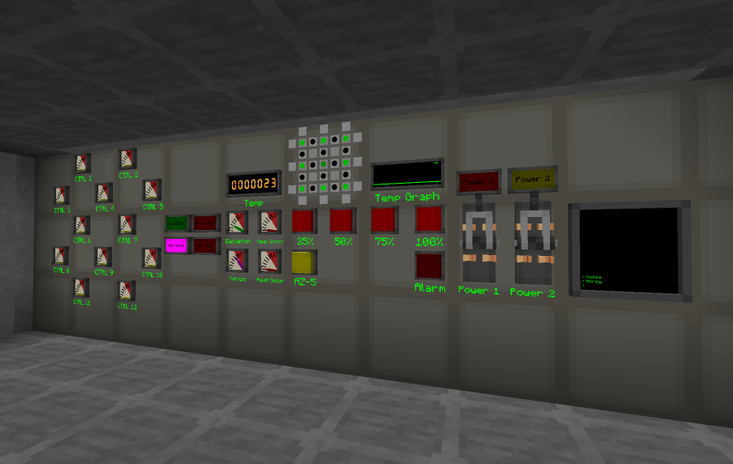
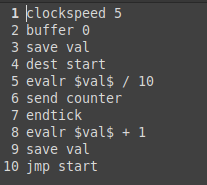

Robcat's Blok
The year was 2024
You may remember the blog post about 'INDEX' that I wrote a few years back. INDEX is the name of a very simple system, in essence an API, that allows blocks to interact with special RoR reader/controller blocks. The actual API was written a long time ago, it was only that the controller blocks came a bit later.This API worked out rather well, as expected, since it's stupidly simple. Machines either get commands + parameters and whatever happens from then on is the machine's responsibility, or they allow a value to be grabbed using a string identifier which is then transmitted by an RoR reader. Simple. Commands could be sent using basic RoR transmitters, since those supported custom mappings, it was possible to turn redstone signals into RoR messages containing commands. Likewise, values provided by machines could be checked either directly with custom mappings on RoR receivers, or compared against with logic receivers. With these basic interactions, most machines that had RoR integration could already be effectively remote controlled. Turning on a reactor at the click of a button, shutting off power production by cutting an oil supply if the battery buffer was full, et cetera.
But what if we had...more?
A few months back, I wrote about the RBMK rework which happened around that time. The limits of the RBMK console were showing, so just as a thing on the side, I threw in a single block panel that could display a 7x7 segment of an RBMK. People could then just tile those up and make arbitrarily large displays for reactors of any size. But that raised a new question, if those tiny panel blocks can replace RBMK displays, could they also replace the controls?"Just a thing on the side", I said
What happened afterwards happened with quite some speed. At first I added an RoR button panel which allowed RoR signals to be sent by the press of a button. Obviously it got polling support too, so that signals would be repeated until the button was unpressed. This meant that instead of walls with levers and buttons, which take up a full block per function, one could now have these compact panels that combined four buttons in one block, could be color-coded and labeled with glow-in-the-dark paint. Neat. But what if we wanted to not just control things and have the generalized overview of the reactor, but see individual values too?Dear god
RoR gauges, define a range, and then it moves a needle depending on a numeric input signal. Not accurate enough? RoR numeric displays show exact numbers on fancy incandescent seven segment displays instead. But what if we wanted to somehow represent a value change over time? Well the RoR graph is the same thing but it doesn't display a single number but rather the titular graph over a timespan of 15 seconds. But what if we want an alert if some value goes within a certain range? RoR indicator lights do just that, and you can fit up to six of them on a single panel block. But what if we want more stylish options for controlling things, like a toggle switch? RoR levers which can send two different values depending on the position they're in, and they come with smooth animations and sparkly particles. But what if we want to send very specific commands and not just a fixed list bound to buttons? Well then there's the RoR terminal which is just a big CMD screen that allows you to manually send commands over the specified channel.
A custom built control room showing off all the existing RoR panels which control a functional RBMK.Make it stop
Haha no we aren't done yet. What if you want to do actual math? What if you want to trigger certain things based on complex conditions? Until now you would have needed a powerful redstone computer, and even then that might not able to make sense out of certain RoR inputs. Why not just have an actual computer instead? With a sinple instruction set that can interface with Redstone-over-Radio directly, allowing to do math, make decisions, and all the other things it is computers do?AUTOCAL
The automatic calculator does just that. I remember years ago, UFFR suggested adding a computer written in a custom assembly dialect, which I was opposed to. For one, what would the computer even do, RoR and all the control stuff didn't exist at that time, and secondly, who would want to learn a custom dialect of assembler for that?Well it turns out I eventually did decide on adding my own language to the AUTOCAL, MS-ES1. An older idea included adding a proper LISP machine, but it's unlikely people would want to learn LISP. I find LISP a rather interesting language, but it's understandable that nowadays people aren't to thrilled at the prospect of having to work with it. MS-ES1 is similarly simple, but more akin to BASIC. The instruction set is very limited and hopefully easy to memorize, sending and receiving RoR signals, reading and writing variables and the buffer, checking buffered numbers and variables against each other, (conditional) jumping and evaluating math expressions.
The variables and conditions technically make the AUTOCAL turing-complete, although writing large programs can be cumbersome (and clock speed is limited, so complex programs may not even work correctly if a result is needed right away). Still, it is a powerful tool that can parse all math expressions that NTM's calculator (the one with the hotkey N) can.

A simple script that counts the amount of seconds and sends them over the RoR channel "counter".We're not done yet
More RoR panels are of course still planned. A few more variants for buttons or sliders, more visualization like a bar gauge, simple stuff. However there's still more avenues we can explore. Proper large text displays where text can be substituted with incoming RoR values. Pixel displays that can be edited with various RoR commands. This one sounds simple on paper, but with some more stuff that's now possible, this could be absurdly powerful.The original INDEX blog page mentioned a satellite base station that can interact with RoR. This hasn't been added yet, but it will be some time soon. With the addition of a pixel display, this allows us to actually properly visualize the data we get from satellites. Send a command to let a depth scanning satellite to only filter by alexandrite ore, get the scan return as pixel data, visualize it, boom, visual ore scanner.
What the original blog page didn't predict was AUTOCAL. We can now handle in and output automatically. Combined with the satellite base station, one could in theory build a setup where the computer tells the satellite to sweep an area, performing regular scans, and then also interprets the pixel data it returns, not just for the visualization, but to give alerts for certain data. Automated spy satellites. Automated discovery of bases, entities, ores, things we can't even imagine right now. AUTOCAL's ability to parse certain formats is a bit limited, but future versions could fix that. Automated parsing of location data. Automated sending of artillery commands. Who needs to find a base and then blow it up with grenades and missiles when you can just have the satellite find it for you and the AUTOCAL controlled artillery do the rest?
God
At this point you may be thinking, but wasn't most of this already possible to do with OpenComputers, or at least wasn't it possible to add compatibility that would allow for all that? The answer is yes of course, OpenComputers is even more powerful than the AUTOCAL, the issue is that you would actually need a separate mod for this, someone would need to write the integration for it (not me), and the end user would need to understand Lua. I'm not learning Lua, fuck that. The AUTOCAL's instruction set is incredibly simple, and a comprehensive manual which is (hopefully) easy to understand for normal people is included. Indeed, it would be overkill to set up OpenComputers and learn Lua when all that's needed is very basic calculations.I honestly pity other tech mods for not having RoR at this point. Going forward, almost all machines will receive some RoR support.
< where's the door